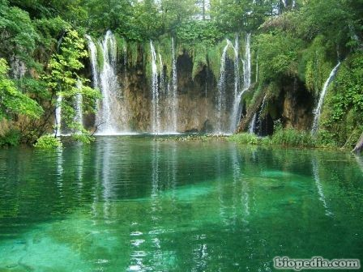
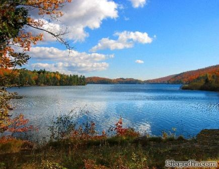
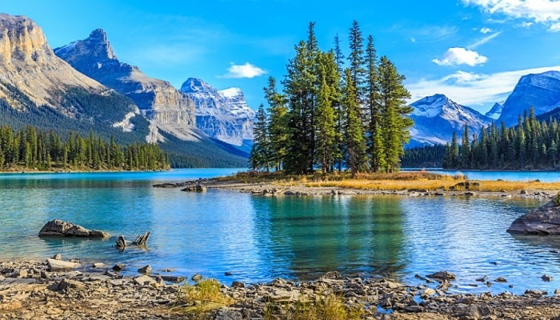
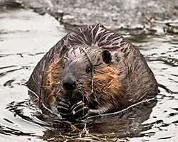

Bioma de Agua Dulce

Muchas personas pasan por alto la importancia de los biomas de agua dulce. Son cuerpos de agua mucho más pequeños que los océanos, pero importantes de todos modos. Los biomas de agua dulce incluyen lagos, ríos, arroyos y riachuelos. Todos ellos de descargan su agua en los océanos, por lo general a partir de la desembocadura de los ríos. Algunas personas consideran si incluir las zanjas, cunetas, canales y charcos en estos biomas.
Los biomas de agua dulce cubren 1/5 del planeta y son vitales para nuestra supervivencia. Más de la mitad del agua potable para los seres humanos y los animales proviene de este recurso. Cuando tomas tu ducha diaria, a menudo sólo abres el grifo y lo das por sentado, sin embargo, casi toda esa agua proviene inicialmente de un bioma de agua dulce.
Estos cuerpos de agua no deben ser en absoluto profundos, pueden ser tan bajos como sólo un pie de agua y nunca tienen más de seis pies de profundidad. Los Everglades de Florida, en los Estados Unidos es el bioma de agua dulce más grande del mundo, pero se encuentran distribuidos en todo el mundo.
Son muy importantes para el equilibrio general de las cosas, algunas personas asumen que son el más grande de todos los biomas, pero no lo son. Simplemente los biomas de agua dulce están tan esparcidos que da la impresión de que abarcan un área más grande de lo que realmente hacen.
Características de los biomas de agua dulce: En los biomas de aguas dulces existe abundante nutrición y minerales, es por eso que tantos tipos de plantas y animales son capaces de prosperar en tales ubicaciones. Usted puede no notarlo, pero el agua salada puede ser muy dura, y no son ideales para muchas formas de plantas y vida animal que sin embargo, son capaces de hacerlo muy bien en cuerpos de agua dulce.
Su tamaño varía mucho y puede hacer que caracterizarlos sea difícil pero tienen importancia vital en maneras de las que la mayoría de nosotros no nos damos cuenta.

¿Donde Esta el Agua?
El agua dulce se puede encontrar a nuestro alrededor. Las tres categorías principales de biomas de agua dulce son:
• arroyos / ríos
• lagos / estanques
• humedales
Dentro de estas categorías, hay mucha variación. De hecho, no hay dos ecosistemas de agua dulce iguales. Cada ecosistema de agua dulce es único en su geología, química y biología
Algunos de estos sistemas de agua dulce fluyen, como ríos y arroyos, y se llaman ecosistemas lóticos. Otros, como lagos, estanques y humedales, tienen agua que permanece en su mayoría. Estos constituyen los ecosistemas estacionarios o lénticos de agua dulce.
Lo que hace que el ecosistema sea lótico (fluido) o léntico (estacionario) es el paisaje circundante. Por ejemplo, una montaña empinada permite que la precipitación o la nieve derretida desciendan como un arroyo o un río. Por otra parte, una cuenca en el suelo más profunda que el nivel del agua subterránea puede crear un lago.

Dependiendo de la ubicación y el paisaje, la fuente de agua dulce también puede variar. Los glaciares, los acuíferos subterráneos y la precipitación (como la lluvia y la nieve) son las principales fuentes de agua dulce.
Un bioma siempre cambiante
Los biomas de agua dulce siempre cambian y también pueden hacer cambiar los paisajes que los rodean. Un río sinuoso puede excavar en la tierra durante cientos de años, volviéndose más retorcido con el tiempo. Si pasa el tiempo suficiente, el río podría formar un lago especial llamado lago en herradura.
Los animales también pueden crear nuevos ecosistemas de agua dulce. Los castores y los humanos son muy buenos construyendo presas en arroyos y ríos, que pueden terminar creando lagos.
Las presas pueden tener grandes efectos en la ecología de los ecosistemas de agua dulce. Por ejemplo, la barrera física creada por una presa puede cambiar las rutas de migración de especies de peces, como el salmón del Pacífico. Las presas también pueden ocasionar inundaciones, que pueden ser muy importantes para los ecosistemas circundantes.
